Mosaic
UX Research • UX/UI DESIGN
Concept for a digital creative emotional regulation tool for children, drawing on existing therapeutic and art therapy practices.
Zoe loves machine learning, data science, user research, and accessible design.

Concept for a digital creative emotional regulation tool for children, drawing on existing therapeutic and art therapy practices.

Interactive installations guiding travellers, both new and old to the city of Brisbane, to their destinations using public transportation.